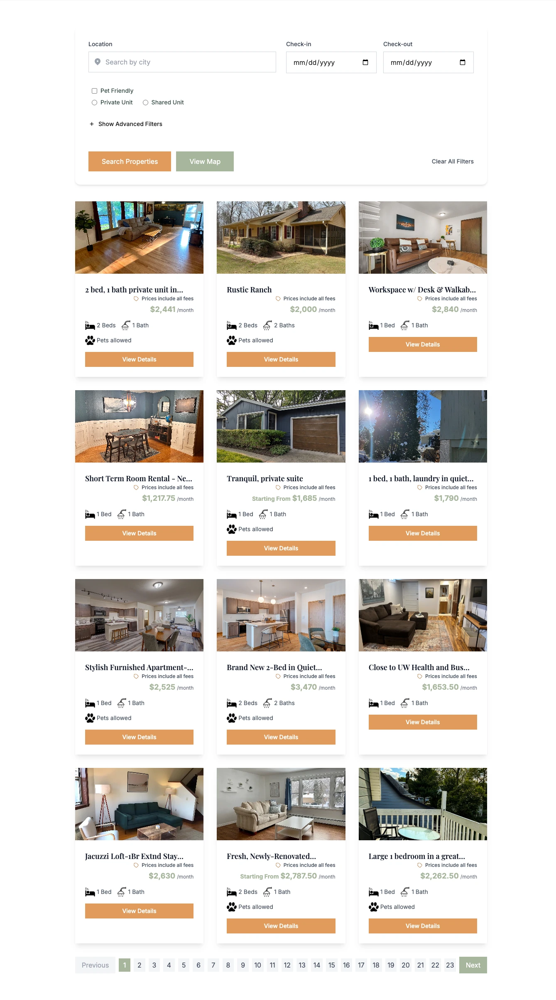
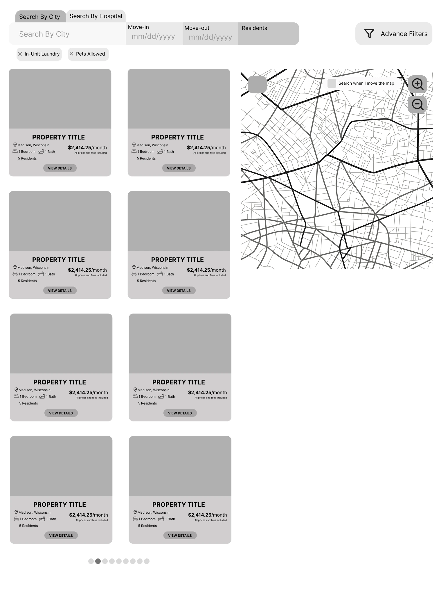
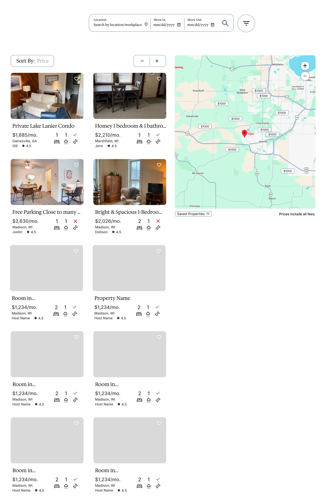
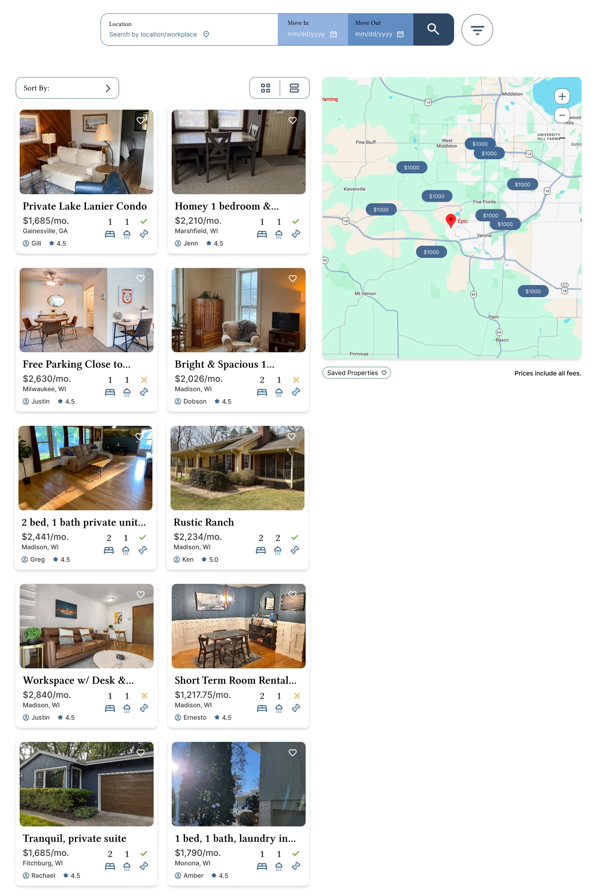

Reliable Residence Redesign
April 2026
Goal & Constraints
Reliable Residence is a startup housing platform that aims to help traveling workers quickly find affordable housing in an unfamiliar area. Our team only had six weeks to make extensive user-flow improvements to three critical pages of the existing website. We needed to both accelerate a user's journey through the site to find housing as quickly as possible while also building and maintaining their trust in the service.
Initial Direction
As part of a larger design team that was revamping the major pages of the site, I worked on the property searching page.

After analyzing this page with the rest of my team, we identified the major issues with the poorly displayed information. In the cards, the price doesn't stand out, "Prices include all fees" is written on every single property, and the cards weren't very optimized for how large they were. This all prevents the user from efficiently browsing properties. They have to decipher what information is actually important and what's just taking up space.
On top of that, some important information just isn't shown. Clicking into a property displays more in-depth information about the host, the property's location, and the amenities that the property includes. The search page doesn't show any of that. This means the user must constantly load into a new page just to see basic information.
Looking through similar services and how they displayed information, we took inspiration from Airbnb, Transplant, and Placemakr. Each site used a lot less space in their property cards to include the same information as Reliable Residence. They also have some sort of map to visualize where the properties actually are. Using the features we liked from our inspo websites, we developed several low-fidelity prototypes for each page.

From then, we moved on to consolidating the various low-fidelity designs into one high-fidelity prototype. The most prominent changes to the search page were the addition of a large map and a simplified search bar. The map displayed a property's price and location, and the new search bar included all the parameters from the old version into a one-line, intuitive design.

Through user-testing, we found that the addition of a map and new search bar greatly decreased the time to find a property. Users quickly figured out how the new search bar functioned without any assistance and could locate properties on the map with ease.
Feedback
As a team, we met together to discuss a consistent look across our three pages. We drafted up a unified color scheme, icon style, and typography to make each page part of the same design system.
Finally, we had a meeting with the startup founder to get her opinion on our updates. She loved our new map, and together we developed the idea of including a searched workplace to display how close each property is from where the user would be working.
Final Outcome
In addition to the new map and search bar, we also updated the cards to have two different views. Users who want a quick overview can use the grid view to scan key details like price, bed/bath count, and host info. Those who want more context before clicking in can switch to the row view, which adds a larger image, a short description, and highlighted amenities, which lets them make a more informed decision without leaving the page.
After the team discussion and founder feedback, we incorporated much more color to our designs and showcased the feature of displaying a workplace amongst the actual properties.

The user's journey through the page has been greatly shortened and simplified; they can see much more information about the property without having to click into a new page. Users can now also compare prices and locations relative to their workplace from the map, which saves them from having to contact the host about commute times. As for building trust, we added more information about the host. By using a new rating system, users can get an idea of how trustworthy the person they're renting from actually is.